Welcome to Summer Junior Courses
Our youth sailing and windsurfing courses cater to everyone from complete beginners to seasoned sailors, with multi activity courses building confidence and pathways to instructor training!
SAVE 10% WHEN BOOKING ANY 3 OR MORE PARTICIPANTS ON COURSES
We follow the RYA Youth syllabus, sessions are taught by RYA Instructors in a fun and supportive environment, through a mixture of formal and informal practical and theory sessions. RYA certification is awarded upon successful completion of the syllabus, and while we cannot guarantee certification, our goal is to get the best out of all our students during their time with us.
Please scroll down to book Summer courses.
Click here for Easter and Half Term
Sailing Courses
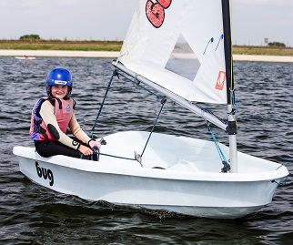
Learn to Sail (8-11) RYA Stage 1
A fun and action-packed introduction to the sport of dinghy sailing. Get out on the water for the first time and learn to sail across the wind, working towards your RYA Stage 1. Runs over 5 full days.
Age: 8-11 years old
Prior experience needed: None!
More Information Book Now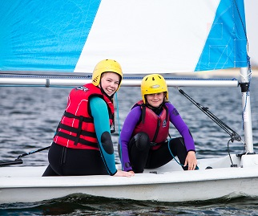
Learn to Sail (10-15) RYA Stage 1
Start sailing with the RYA stage 1 course - A fun and action-packed introduction to the sport of dinghy sailing. Get out on the water for the first time and learn to sail across the wind, working towards your RYA Stage 1. Runs over 5 full days.
Age: 10-15 years old
Prior experience needed: None!
More Information Book Now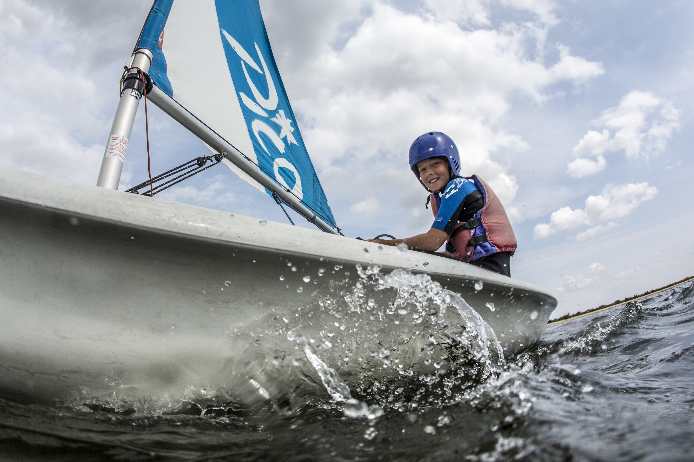
Next Steps Sailing (8-11) RYA Stage 2
Our Next Steps Sailing course is structured around the RYA Stage 2 syllabus where you will look at sailing single handed and in many different directions! This is offered as a 3 day course (Wednesday - Friday) throughout all school holidays.
Age: 8-11 years old
Prior experience needed: RYA Stage 1
More Information Book Now
Next Steps Sailing (10-15) RYA Stage 2
Our Next Steps Sailing course is structured around the RYA Stage 2 syllabus where you will look at sailing single handed and in many different directions! This is a 3 day course (Wednesday - Friday) throughout the school holidays.
Age: 10-15 years old
Prior experience needed: RYA Stage 1
More Information Book Now
Improver Sailing (8-15) RYA Stage 3
Improver Sailing will follow the RYA Stage 3 syllabus, focusing on upwind and downwind sailing as well as manoeuvres such as man overboard recovery. Runs over 5 full days.
Age: 8-15 years old
Prior experience needed: RYA Stage 2
More Information Book Now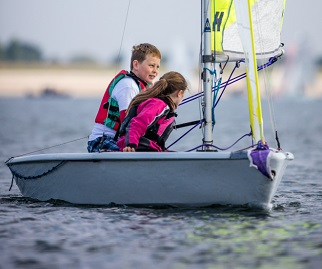
Sailing Competence (10-15) RYA Stage 4
Sailing Competence focuses on RYA Stage 4 taught in double handed boats. This is the first course when the student gets to learn teamwork as a helm or crew as well as working in dinghies which have more than one sail. It is run over 5 full days.
Age: 10-15 years old
Prior experience needed: RYA Stage 3
More Information Book Now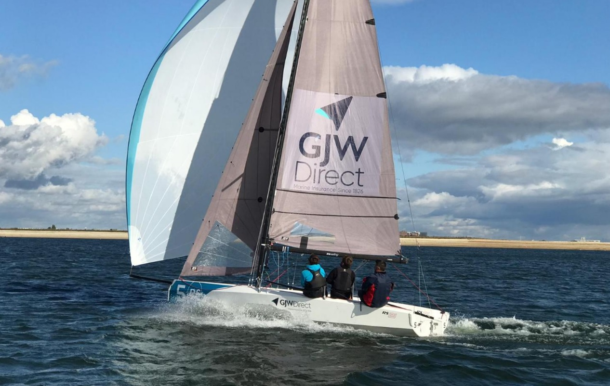
Youth Keelboat Week (14-17) RYA Keelboat Level 2
Looking to try out a keelboat? Come and join our youth keelboat week and learn all about our RS21s. You might even get to try out the spinnaker! This works towards RYA Keelboat Level 2 and is ideal for teenagers. This normally runs over 5 full days.
Age: 14-17 years old
Prior experience needed: RYA Stage 3
Book Now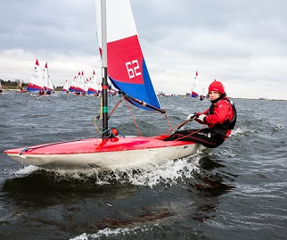
RYA Start Racing (10-15)
A great introduction to dinghy racing, for those with RYA Stage 3 or equivalent experience already. Includes boat handling, race starts, mark rounding and theory. Runs over 5 full days.
Age: 8-15 years old
Prior experience needed: RYA Stage 3
More Information Book Now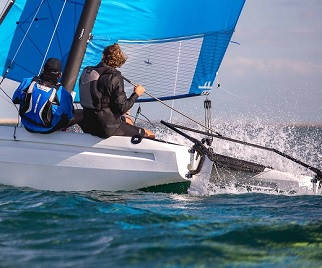
Cats and Kites
Once you have completed RYA Stage 4, this course will teach you how to sail with spinnakers and how to use catamarans. A great course focused on going fast. Runs over 5 full days.
Age: 10-15 years old
Prior experience needed: RYA Stage 4
Book Now
Advanced Sailing
Once you have completed RYA Stage 4, this course will teach you how to sail with asymmetric spinnakers alongside the RYA Seamanship Skills course. This looks at sailing in adverse circumstances.
Age: 10-15 years old
Prior experience needed: RYA Stage 4
Book NowIntermediate Racing
Build on your racing skills to feel comfortable joining club racing. Designed for those with Start Racing to continue progressing. Learn further boat on boat tactics and starting strategy. Offered as a three day course.
Age: 10-15 years old
Prior experience needed: RYA Start Racing
Book NowWindsurfing Courses
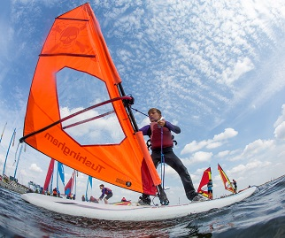
Learn to Windsurf
A fun and action packed introduction into windsurfing working towards RYA Stage 1 and 2. Learn the basics of getting on the board and windsurfing across the wind. Runs over 5 full days during Easter and Summer.
Prior experience needed: None
More Information Book Now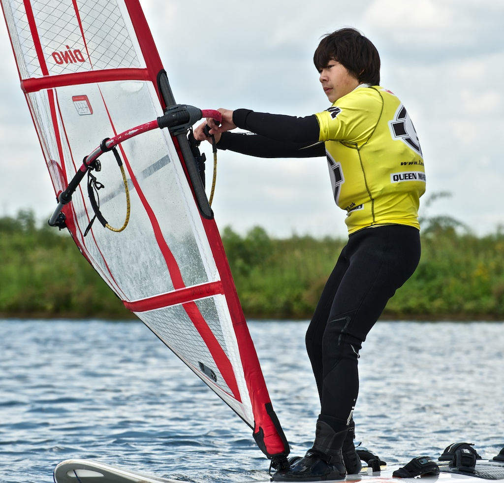
Next Steps Windsurfing
Next Steps windsurfing follows the RYA Stage 2 syllabus and aims to get you windsurfing upwind and downwind, as well as looking at tacking and gybing to make you a more competent windsurfer. Runs over 3 full days (Wednesday - Friday).
Age: 9-15 years old
Prior experience needed: RYA Stage 1
More Information Book Now
Improver Windsurfing
We follow the RYA Fastforward Formula: Vision, Trim, Balance, Power, Stance, progressing towards RYA Stages 3 and 4. Runs over 5 full days in Easter and Summer.
Age: 9-15 years old
Prior experience needed: RYA Stage 2
More Information Book NowMulti-Activity Courses
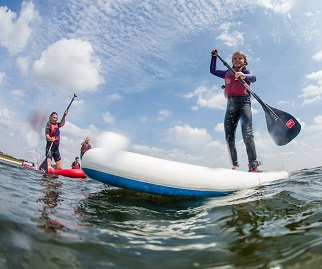
Waterfun (10-15)
An action packed activity week including: Sailing, Kayaking, Stand-up-paddle boarding, Windsurfing and team games. This course has 5 day or 3 day options.
Prior experience needed: None!
Book Now 3 Day Book Now 5 Day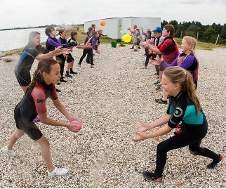
Splash (7-10)
An action packed activity week including: Sailing, Kayaking, Stand-up-paddle boarding, and team games. This course runs with 5 full day and 3 full days options during the Easter and Summer holidays.
Age: 7-10 years old
Prior experience needed: None!
Book Now 3 Day Book Now 5 Day